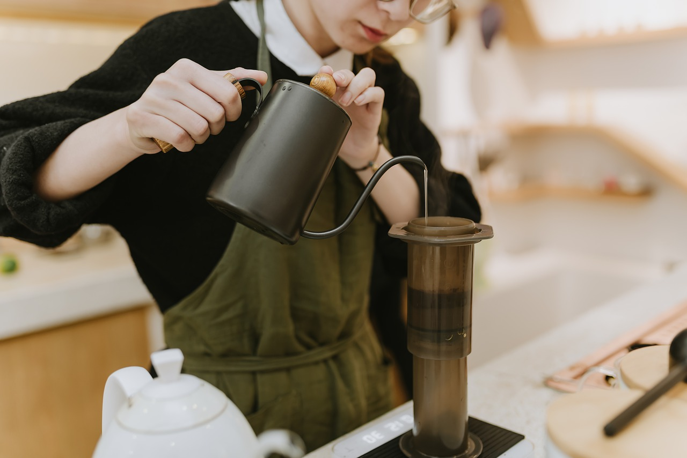

Cafe Nano
I have measured out my life with coffee spoons.
-T.S. Eliot


Cafe Nano
I have measured out my life with coffee spoons.
-T.S. Eliot
about
Our mission is to serve local organic food and ethically raised meats to support health and to start fresh morning.
The coffee we serve is also organic ans it tastes smooth, nonacidic, mellow, and yet somehow still kicks you in
the backside and gets you going in the morning.
We use Arabica coffee beans which have a sweeter, more delicate flavor and the coffee itself tends to be less acidic.
news
address:
2222 Old Financial Street, Financial District, San Feancisco
parking:
street car parking and onsite bicycle parking available.
business hours:
mon - sat 7:00am - 4:00pm
sun: closed